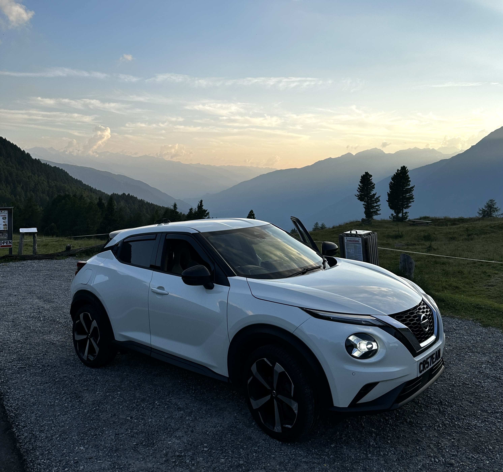
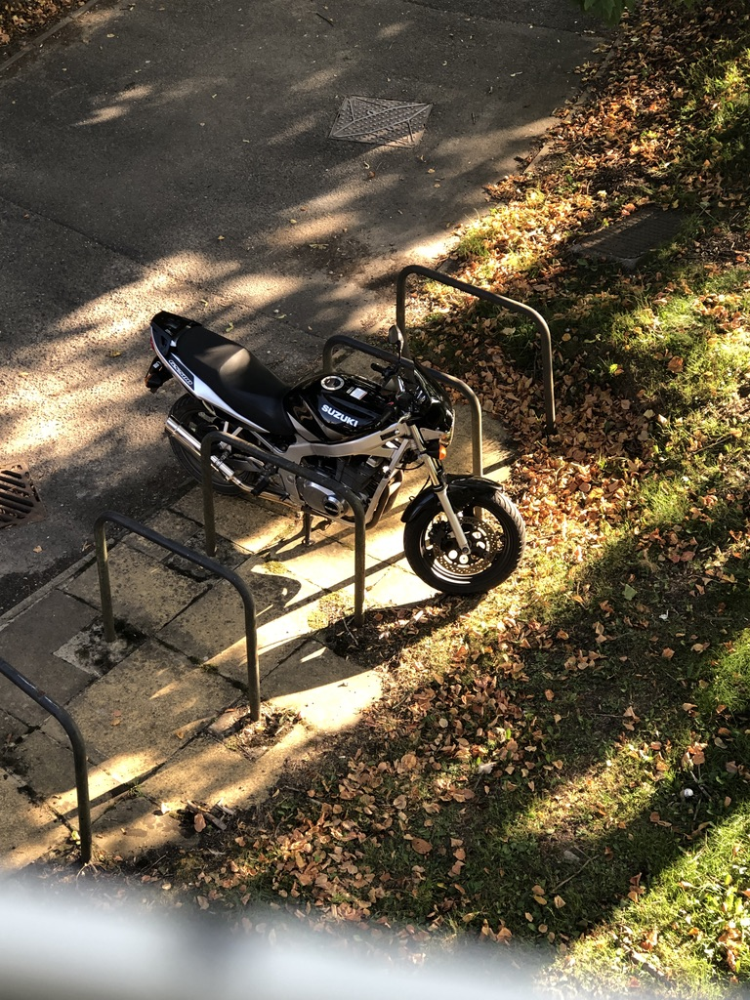

First car

The "jook" during its first European roadtrip.
Mortirolo Pass, Lombardy, Italy. Summer 2024
First motorcycle

My favourite photo of my first motorcycle. Stolen twice.
University of Sussex, Park Village, 2020
First computer
 My father, me and my brother Ștefan unboxing our first computer.
My father, me and my brother Ștefan unboxing our first computer.
Ciurea, Christmas 2003
Last updated on 21 May 2025, 21:32